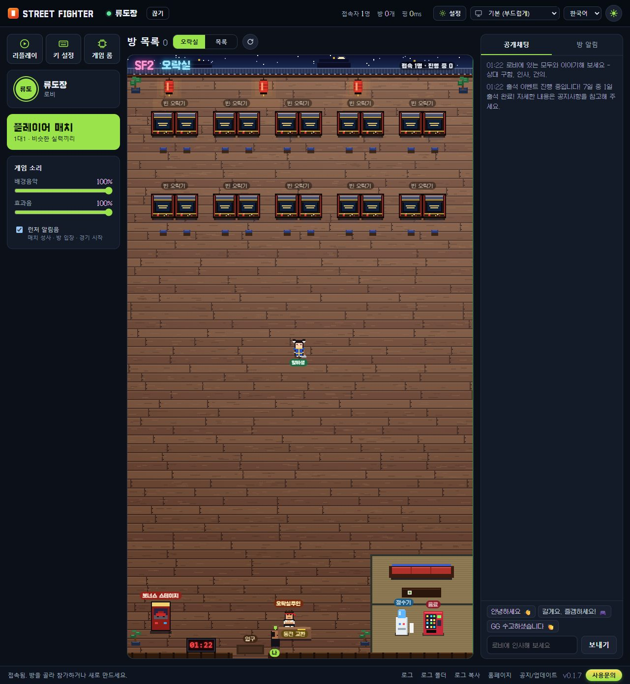
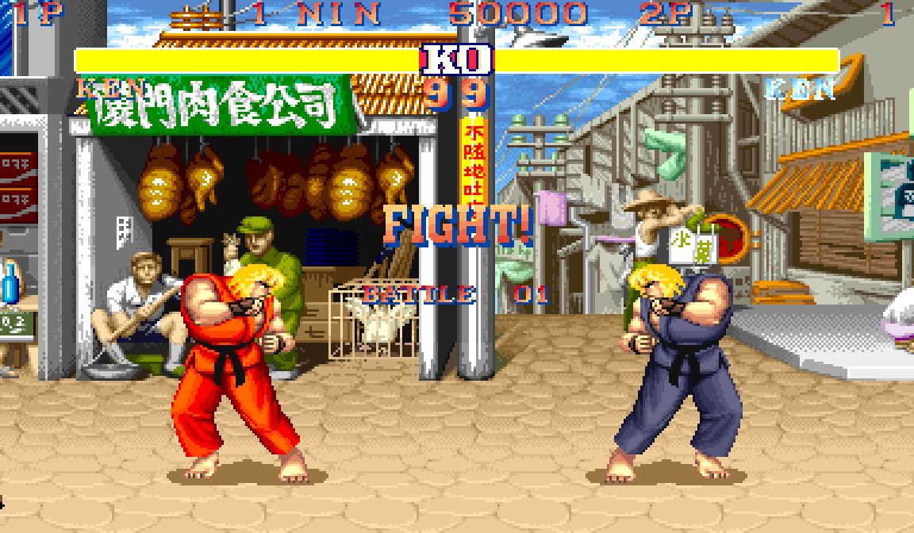
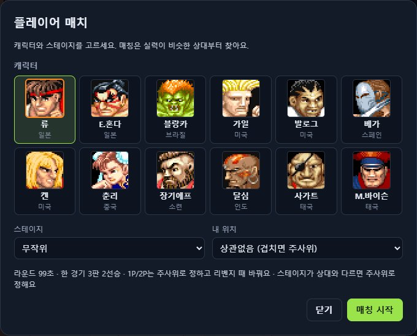
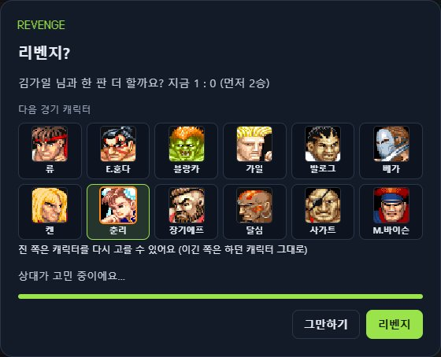

CHAMPION EDITION · ONLINE VERSUS
오락실의 그 게임, 그 느낌 그대로 인터넷에서. 대전신청을 하면 기다리는 동안 CPU와 싸우고, 상대가 잡히면 오락실처럼 도전자가 난입합니다.
INSERT COIN
원작 기판의 감각을 해치지 않으면서, 온라인 대전을 편하게 즐길 수 있도록 만들었습니다.
상대 입력이 늦게 와도 화면이 멈추지 않고 되감아 맞춥니다. UDP 통신, 가까운 상대와는 입력 지연 1프레임.
원래 기판보다 캐릭터가 1프레임 빨리 그려지고, 화면 출력 지연을 최소로 줄였습니다. 전체 화면 지원 (Esc로 창 화면).
대전신청과 동시에 CPU전이 시작되고, 상대가 잡히면 그 게임에 도전자가 들어옵니다. 이긴 사람은 CPU전을 이어 가며 다음 도전자를 기다립니다.
한 경기 3판 2선승. 진 쪽은 캐릭터를 다시 고르고, 스테이지는 진 사람이 고른 곳으로. 대답을 기다리는 동안 게임이 멈춥니다.
2연승부터 내 쪽에 "N WINS". 콤보는 실제 경직으로 판정해 큰 숫자로 보여 줍니다 (막은 공격은 제외, CPU전에서도).
플레이어 매치마다 랭크 점수와 승패가 쌓이고, 비슷한 실력의 상대부터 찾아 줍니다. 순위 보기 준비 중
내 경기를 자동으로 녹화하고 런처 안에서 재생합니다. 재생·일시정지·배속·라운드 이동. 온라인 공유 준비 중
성 지붕 위 오락실 로비. 카운터의 주인은 류, 바닥을 닦는 알바생은 춘리를 닮았고, 구석에는 보너스 스테이지 차 부수기.
키보드·게임패드 키 설정, 한국어 런처, 자동 업데이트. 문제가 생기면 개인정보를 뺀 진단 정보가 자동으로 전달됩니다.
오락실에서 옆자리에 누가 앉던 그 순간을 그대로 옮겼습니다.
캐릭터·스테이지·내 위치(1P/2P)를 고르고 [매칭 시작]. 바로 CPU전이 시작됩니다.
실력이 비슷한 상대가 잡히면 지금 하던 게임에 상대가 들어옵니다. 캐릭터는 고른 대로.
먼저 2라운드를 따면 승리. 연승이면 화면 아래에 N WINS가 붙습니다.
둘 다 수락하면 한 판 더. 아니면 이긴 사람은 CPU전을 이어 가며 다음 도전자를 기다립니다.
HERE COMES A NEW CHALLENGER!
실제 런처와 게임 화면입니다.




Windows 10 / 11 (64비트)에서 동작합니다. 설치 없이 압축만 풀면 됩니다.
mame\roms 폴더에 넣습니다. 런처의 [게임 롬]에서 골라도 됩니다.이 사이트와 런처는 게임 ROM을 배포하지 않습니다. 직접 가지고 있는 sf2ce.zip(월드판)이 필요합니다. 런처가 ROM 파일을 검사해서, 맞지 않으면 어떤 파일이 문제인지 알려 줍니다.
필요 없습니다. 중계 서버를 거쳐 연결되므로 대부분의 집·PC방 인터넷에서 바로 됩니다.
네. 런처의 [키 설정]에서 키보드와 게임패드 모두 맞출 수 있습니다. 대전신청 중에 키를 바꾸면 기다리는 CPU전에도 바로 반영됩니다.
게임은 원래 기판보다 1프레임 빠르게 그려지고, 온라인에서는 입력 지연 1~2프레임에 롤백으로 보정합니다. 모니터에 따라 체감이 다르니, 게이밍 모니터나 전체 화면을 쓰면 더 좋습니다.
상대가 기다리고 있으니 끝까지 함께해 주세요. 베타 기간에는 강제 종료 페널티를 매기지 않지만, 정식 버전에서는 바뀔 수 있습니다.
닉네임과 경기 기록, 그리고 문제가 생겼을 때만 진단 정보(프로그램·윈도우 버전, CPU 코어 수, 메모리 크기, 오류 기록)를 보냅니다. 이름·IP 주소·PC 이름·폴더 경로 같은 개인정보는 보내기 전에 지우며, 진단 정보는 익명 코드로 30일만 보관합니다.